La vidéo de *Pursuing AI* intitulée « L'IA se moque des développeurs… Test LeetCode HARD » s'attaque frontalement au mythe ambiant de l'obsolescence programmée des ingénieurs logiciels face aux progrès fulgurants de l'intelligence artificielle. Le créateur orchestre un test comparatif rigoureux et progressif — allant de problèmes simples à des défis de niveau *Hard* issus d'entretiens techniques de Big Tech — pour évaluer objectivement la frontière entre la simple saisie semi-automatique dopée aux GPU et la véritable ingénierie logicielle complexe. En soumettant une sélection de tests algorithmiques et SQL à quatre grands modèles du marché (Gemini, ChatGPT, Claude et Grok), la vidéo démontre que l'IA ne se contente plus de générer du code superficiel, mais qu'elle est désormais capable de raisonner, d'expliquer des architectures sous-jacentes et de résoudre des problèmes algorithmiques ardus.
Sur le plan de la réalisation et de la narration vidéo, le créateur structure son récit selon une courbe dramatique classique mais redoutablement efficace : la promesse alarmiste initiale (« votre patron va licencier toute l'équipe »), l'escalade de la difficulté (Easy ➔ Medium ➔ Hard) et l'élimination progressive des candidats, culminant avec l'élimination de Grok sur un problème de niveau moyen. L'utilisation habile de l'outil Claude, mis en avant dans l'analyse pour sa capacité à décortiquer les subtilités d'une logique SQL complexe (comme la gestion des ex-aequo avec les sous-requêtes corrélées), renforce la crédibilité technique de la capsule. Le montage s'appuie sur le rythme des tests en temps réel (collage du prompt, exécution dans l'IDE/LeetCode, validation des cas de test), créant un suspense palpable.
Pour les créateurs de contenu vidéo et les monteurs spécialisés dans la tech, cette vidéo offre une masterclass sur la manière de traiter un sujet abstrait et technique en un divertissement captivant. En transformant un benchmark technique aride en un tournoi éliminatoire, le créateur maximise l'engagement du spectateur (*retention rate*), utilise l'humour (« réparer le vieux code de production écrit en 2011 par un stagiaire ») pour dédramatiser la menace de l'IA, et conclut par un appel à l'action naturel et contextuel. Les bénéfices concrets résident dans la maîtrise du *storytelling* par la preuve empirique, l'incarnation d'un test grandeur nature et la capacité à transformer une analyse de code source en un contenu grand public hautement viral.
Tout le monde sur internet ne cesse de répéter la même chose. L'intelligence artificielle va remplacer les programmeurs. Je pense, je ne sais pas, que nous sommes peut-être à 6 ou 12 mois du moment où le modèle fera la majeure partie, voire la totalité, de ce que font les ingénieurs logiciels, et 10. Apparemment, d'un jour à l'autre, votre patron va débarquer au bureau, licencier toute l'équipe de développeurs et la remplacer par un seul prompt et un GPU.
Interface & Outils : B-roll vidéo et illustrations graphiques d'illustration.
Contenu textuel & Code : Texte sous-titré/animé 'THE SAME THING' et incrustations textuelles 'World Economic Forum | YT, Davos, Switzerland, 20 JANUARY, 2026, CREDIT @MINT'.
Action / Démonstration : Illustrations visuelles dynamiques illustrant les propos de l'orateur sur le remplacement des développeurs par l'IA et le matériel informatique.
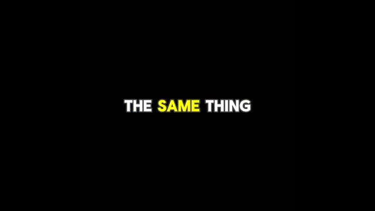
🔍 AgrandirMais est-ce vraiment vrai ? Parce que coder une simple application de tâches à partir d'une consigne, c'est facile. Mais la vraie ingénierie logicielle est complexe. Alors aujourd'hui, nous allons faire un test simple pour découvrir la vérité. L'IA peut-elle réellement résoudre de vrais problèmes LeetCode ? Ou s'agit-il simplement d'une saisie semi-automatique sous stéroïdes ?
Interface & Outils : Interface utilisateur de développement web / application et mème vidéo illustratif.
Contenu textuel & Code : Texte affiché : "Theme park simulation game made with GPT-5.4 from a single lightly specified prompt, using Playwright Interactive for browser playtesting and image generation for the isometric..." et un mème avec le texte "NeedSize" et "A I".
Action / Démonstration : Présentation d'une démo de simulation de parc d'attractions générée par IA, suivie d'une illustration humoristique métaphorique.
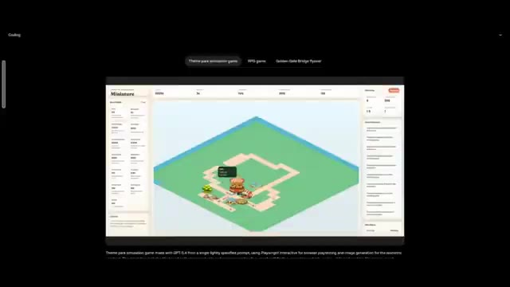
🔍 Agrandir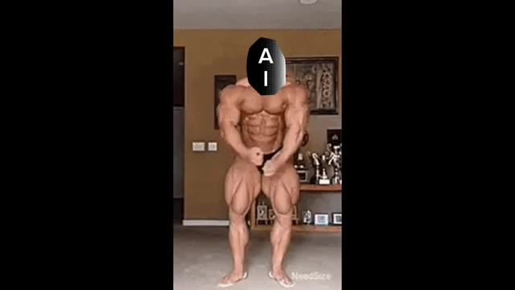
🔍 AgrandirC'est Pursuing AI, et vous regardez le rapport de recherche. Aujourd'hui, nous mettons les plus grands modèles d'IA à l'épreuve. Gemini, ChatGPT, Claude et Grok. Nous commencerons par des problèmes faciles, passerons aux moyens, et terminerons par les difficiles. La règle la plus importante, chaque IA a trois chances pour résoudre un problème particulier.
Interface & Outils : Graphismes animés et présentation visuelle des modèles d'IA testés.
Contenu textuel & Code : Texte 'Easy -> Medium -> Hard' et logos de Gemini, ChatGPT, Claude et Grok.
Action / Démonstration : Affichage graphique des étapes de difficulté et des logos des IA comparées.
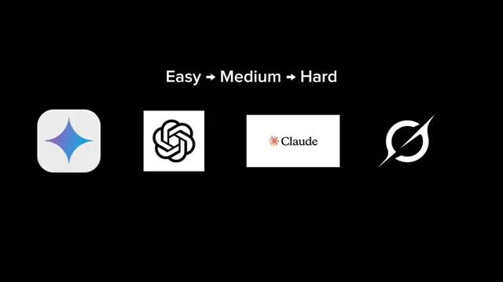
🔍 AgrandirVoyons quelle IA peut réellement réussir et rendre officiellement les codeurs obsolètes partout. Donc, nous commençons d'abord par la question la plus posée par les grandes entreprises, le grand classique des entretiens, Two Sum. Si vous avez déjà passé un entretien dans une entreprise technologique, il y a environ 90 % de chances qu'on vous ait posé cette question. La tâche est simple. Trouver deux nombres qui s'additionnent pour donner une valeur cible.
Interface & Outils : Interface de présentation graphique (diapositive) et interface web d'une plateforme de résolution de problèmes de code (type LeetCode).
Contenu textuel & Code : Sur l'image 1 : Texte "Easy → Medium → Hard", les logos de Gemini, ChatGPT, Claude et un autre modèle, et le texte "3 Chances For A Particular Problem". Sur l'image 2 : Titre "1. Two Sum", description de la tâche ("Given an array of integers nums and an integer target, return indices of the two numbers such that they add up to target."), et trois exemples d'entrées/sorties.
Action / Démonstration : Le créateur présente visuellement la structure de l'évaluation des IA selon la difficulté des problèmes, puis affiche l'énoncé exact du problème "Two Sum" pour expliquer l'exercice de code soumis aux IA.
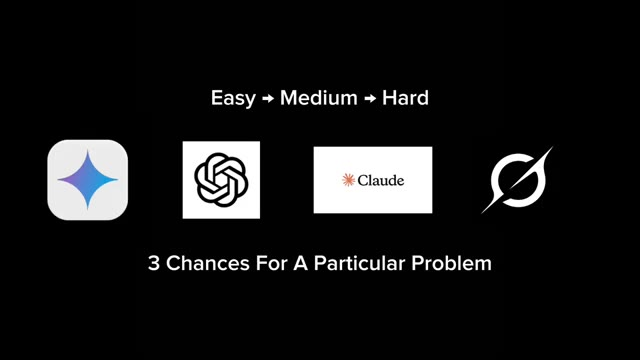
🔍 AgrandirLa cible est 9, 6, et encore 6 à partir des paires suivantes. En commençant donc par ChatGPT, je colle la question et lui demande de résoudre le problème en Java, et immédiatement il écrit le code. Il utilise une table de hachage pour résoudre le problème, ce que la plupart des développeurs feraient exactement. Nous copions donc le code, le collons dans LeetCode, et l'exécutons. Et le code est correct. Il valide tous les cas de test. Jusqu'ici, tout va bien.
Interface & Outils : LeetCode (navigateur web)
Contenu textuel & Code : Le problème numéro 1 intitulé "Two Sum" avec la description demandant de retourner les indices de deux nombres dont la somme est égale à la cible (target), accompagné de trois exemples (Exemple 1 : nums = [2,7,11,15], target = 9 ; Exemple 2 : nums = [3,2,4], target = 6 ; Exemple 3 : nums = [3,3], target = 6).
Action / Démonstration : Le curseur de la souris survole les exemples de tests du problème sur LeetCode pendant que le créateur présente le problème à résoudre.
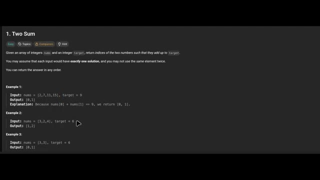
🔍 AgrandirMaintenant, je colle la même question à tous les modèles d'IA. Et honnêtement, ils les ont tous résolues très facilement. Pas de drame, pas d'hallucinations, juste des solutions correctes. Donc problème facile, l'IA réussit. Les développeurs sont toujours en sécurité, pour l'instant. Il est maintenant temps de passer aux problèmes de niveau moyen.
Interface & Outils : LeetCode et interfaces de chat de modèles d'IA (dont Grok).
Contenu textuel & Code : Liste de problèmes de programmation sur LeetCode (ex: "Two Sum", "Add Two Numbers", "Median of Two Sorted Arrays") avec leurs niveaux de difficulté et pourcentages de réussite. Fenêtres de discussion avec des IA montrant des codes et solutions.
Action / Démonstration : Le créateur montre les interfaces de différentes IA résolvant facilement un problème de programmation facile sur LeetCode avant de passer à des problèmes de niveau moyen.
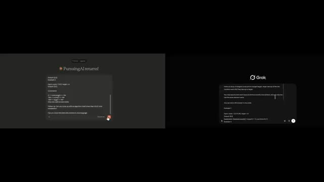
🔍 Agrandir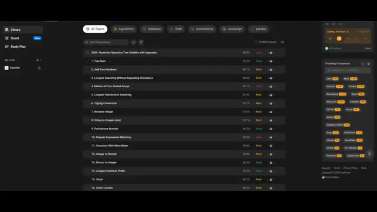
🔍 AgrandirC'est là que les choses commencent à devenir intéressantes. Parce que si l'IA peut résoudre des problèmes LeetCode de niveau moyen de manière cohérente, les développeurs devraient probablement commencer à y prêter attention. J'ai donc choisi ce problème. Le numéro trois, un classique. La plus longue sous-chaîne sans caractères répétés. Si vous avez déjà fait du LeetCode, vous savez déjà que celui-ci est célèbre.
Interface & Outils : LeetCode (plateforme web d'entraînement au code).
Contenu textuel & Code : Liste de problèmes de programmation avec des scores de difficulté (Easy, Med, Hard), incluant notamment "1. Two Sum", "2. Add Two Numbers", et "3. Longest Substring Without Repeating Characters", ainsi qu'un panneau latéral avec des catégories de sujets et des filtres d'entreprises (Trending Companies).
Action / Démonstration : Affichage de la bibliothèque de problèmes LeetCode pour présenter le problème classique sélectionné pour le test.
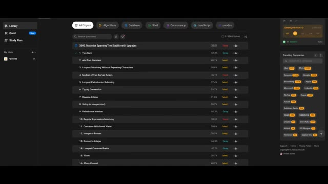
🔍 AgrandirJe colle une question à tous les modèles d'IA et leur demande d'expliquer l'approche. Voici ce qui se passe. Gemini utilise une fenêtre glissante avec une table de hachage. ChatGPT utilise une fenêtre glissante plus un ensemble de hachage. Claude utilise également une fenêtre glissante et une table de hachage. Et ensuite nous avons Grok. Grok décide de faire quelque chose de légèrement différent.
Interface & Outils : Interfaces web de chatbots d'IA (ChatGPT) affichant des réponses de programmation en Java.
Contenu textuel & Code : Code source en Java (classe Solution, méthode lengthOfLongestSubstring), explications des approches algorithmiques ('Sliding Window + HashSet', 'Optimized Sliding Window with Array'), complexité temporelle O(n) et spatiale O(1) ou O(n).
Action / Démonstration : Affichage et comparaison des réponses de différents modèles d'IA concernant un problème de programmation LeetCode.
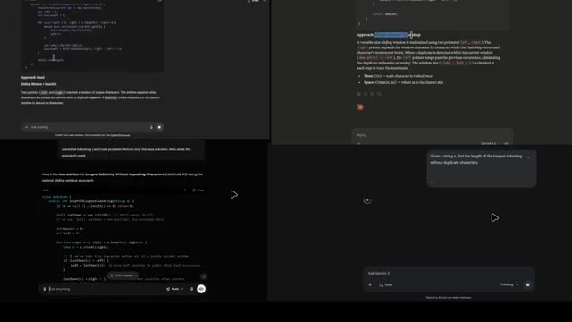
🔍 Agrandir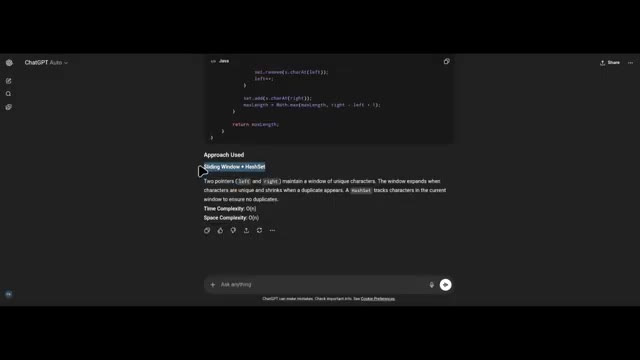
🔍 Agrandir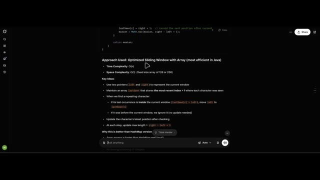
🔍 AgrandirIl utilise une fenêtre glissante avec un tableau, et Grok explique même pourquoi il a choisi cette méthode. L'accès au tableau est plus rapide que la méthode get d'une table de hachage. Une taille fixe et restreinte offre une meilleure localité de cache. Pas de mise en boîte ou de déballage des entiers. Ce qui, honnêtement, ressemble au genre d'explication que l'on donne en entretien pour impressionner le recruteur.
Interface & Outils : Interface de chat web (style Grok / LLM) avec un panneau de code en haut et une liste de points explicatifs textuels.
Contenu textuel & Code : Code source en haut (extrait Java avec `lastSeen` et `Math.max`), suivi du texte « Approach Used: Optimized Sliding Window with Array (most efficient in Java) », la complexité temporelle et spatiale, des idées clés sur l'utilisation de pointeurs `left` et `right`, et les avantages par rapport à une version HashMap.
Action / Démonstration : Visualisation d'une explication technique générée par une IA détaillant l'algorithme de fenêtre glissante en Java.
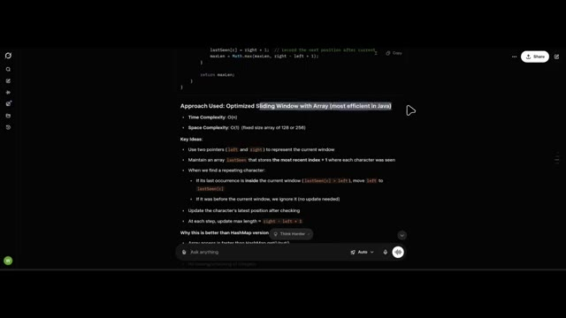
🔍 AgrandirPassons donc au test décisif. Est-ce que les solutions fonctionnent réellement ? L'approche de Grok est correcte. Celle de Claude l'est également. Le code de Gemini est correct. Et ChatGPT, également correct. Chaque modèle d'intelligence artificielle a résolu avec succès un problème LeetCode de niveau moyen, ce qui est impressionnant, mais aussi légèrement terrifiant.
Interface & Outils : Interface de la plateforme LeetCode et éditeur de texte sombre pour l'analyse de code.
Contenu textuel & Code : Problème LeetCode "3. Longest Substring Without Repeating Characters", code Java, cas de tests réussis ("Accepted"), et notes d'explication textuelles sur la complexité algorithmique.
Action / Démonstration : Présentation comparative des résultats de code validés ("Accepted") obtenus par différents modèles d'IA sur un problème LeetCode moyen.
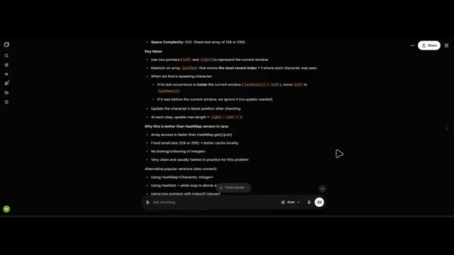
🔍 Agrandir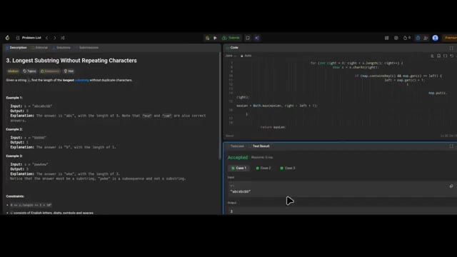
🔍 Agrandir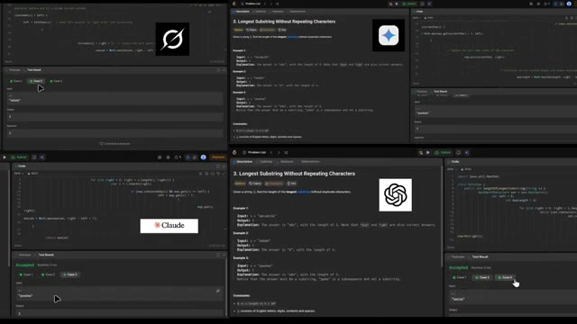
🔍 AgrandirL'étape suivante est évidente. Rendons les choses plus difficiles. Maintenant, nous essayons un autre problème de niveau moyen qui est réellement posé lors des entretiens chez Google. Meilleur moment pour acheter et vendre une action, II. L'objectif est de maximiser le profit en achetant et en vendant une action plusieurs fois, mais vous devez vendre avant d'acheter à nouveau.
Interface & Outils : Interface web sombre d'une plateforme de préparation aux entretiens techniques (type LeetCode) avec un menu de navigation latéral à gauche ("Library", "Quest", "Study Plan"), une barre de recherche de questions, des filtres par thématiques ("All Topics", "Algorithms", "Database", "Shell", etc.) et un panneau latéral des entreprises tendance à droite ("Uber", "Amazon", "Google", "Bloomberg", etc.).
Contenu textuel & Code : Liste de problèmes d'algorithmique visibles à l'écran : "1. Two Sum", "2. Add Two Numbers", "3. Longest Substring Without Repeating Characters", "4. Median of Two Sorted Arrays", "5. Longest Palindromic Substring", "6. Zigzag Conversion", etc., avec leurs niveaux de difficulté respectifs (Easy, Med, Hard) et pourcentages de réussite.
Action / Démonstration : L'écran présente la bibliothèque de problèmes de programmation pour sélectionner et résoudre le prochain défi algorithmique.
Donc fondamentalement, le genre de problème qui ruine les weekends des développeurs. Est-ce que l'IA peut résoudre ça ? On commence avec Claude. Claude écrit le code, et l'explication est plutôt bonne. Il utilise une approche gloutonne. L'idée clé est que le profit maximum est égal à la somme de chaque mouvement de prix à la hausse.
Interface & Outils : LeetCode (plateforme web d'entraînement algorithmique) avec un panneau de description du problème à gauche et un éditeur de code en Java à droite.
Contenu textuel & Code : Le problème LeetCode numéro 122 "Best Time to Buy and Sell Stock II" (niveau Moyen), avec les exemples d'entrées/sorties et l'éditeur de code affichant la signature de la méthode en Java (`class Solution { public int maxProfit(int[] prices) { } }`).
Action / Démonstration : Le créateur montre l'énoncé d'un problème algorithmique complexe sur LeetCode que l'IA va devoir résoudre.
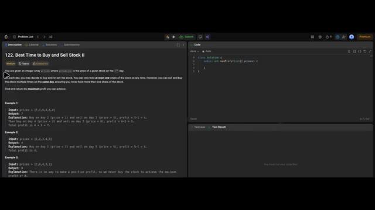
🔍 AgrandirPar exemple, du jour un au jour deux, le prix est de sept à un, donc le gain est de zéro. Du jour deux au jour trois, le prix passe de un à cinq, donc le profit est de quatre. Et cela continue. Nous exécutons le code de Claude et félicitations, Claude a réussi à le résoudre.
Interface & Outils : Interface de l'assistant IA Claude avec un panneau de discussion sombre et une zone de réponse.
Contenu textuel & Code : Un texte explicatif ("Approach: Greedy"), un exemple de tableau ("Walk-through with Example 1 -> prices = [7, 1, 5, 3, 6, 4]") avec les colonnes Day, prices[i], prices[i-1], Gain et Total Profit.
Action / Démonstration : Un curseur de souris survole le tableau affichant les détails des prix et des gains calculés par l'algorithme.
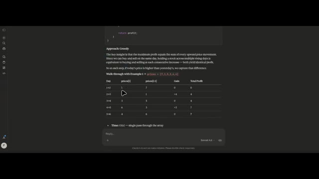
🔍 AgrandirMaintenant, nous testons les autres. Gemini utilise également la méthode gloutonne. ChatGPT utilise également la méthode gloutonne. Mais Grok, Grok ne peut pas résoudre ce problème. Donc à ce stade, Grok est malheureusement éliminé, ce qui signifie que les concurrents restants sont ChatGPT, Gemini et Claude. Et honnêtement, ils s'en sortent très bien.
Interface & Outils : Interface de Google Gemini et écran de présentation avec les logos des IA concurrentes.
Contenu textuel & Code : Texte en anglais dans Gemini expliquant que le problème récompense une approche "gloutonne" (greedy mindset) pour maximiser le profit. Logos de ChatGPT, Claude et Gemini affichés côte à côte.
Action / Démonstration : Présentation de la réponse de Gemini sur l'algorithme glouton, suivie d'un récapitulatif visuel des trois IA restantes en compétition.
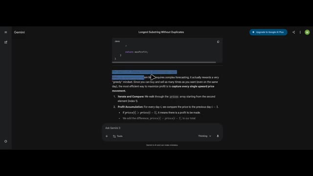
🔍 Agrandir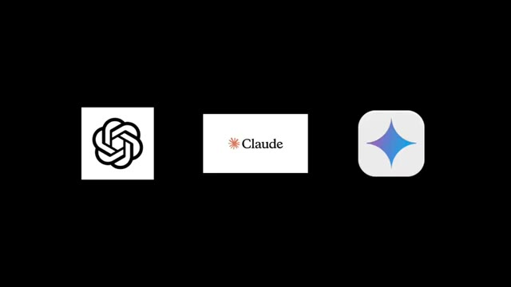
🔍 AgrandirMais maintenant, c'est l'heure du problème difficile. C'est là que les choses se brisent généralement. Le problème concerne les trois meilleurs salaires par département. Ce problème vous demande de trouver les trois salaires les plus élevés de chaque département. Il s'agit plutôt d'une logique SQL complexe. Claude utilise une méthode appelée sous-requête corrélée. Il explique même l'exemple. Dans le département informatique, deux employés partagent le même salaire. Joe et Randy gagnent tous deux 85 000 $. Comme ils partagent le même salaire, ils comptent tous les deux comme le deuxième salaire unique, pas le deuxième et
Interface & Outils : Plateforme de codage en ligne type LeetCode avec un panneau latéral de navigation, une barre de recherche de questions et une liste de défis classés par niveau de difficulté.
Contenu textuel & Code : Liste de problèmes de programmation avec des scores de difficulté (Easy, Med, Hard) et des filtres thématiques comme "All Topics", "Algorithms", "Database", "Shell", "Concurrency", "JavaScript", "Pandas".
Action / Démonstration : Navigation et affichage de la bibliothèque de problèmes de code SQL/algorithmes sur l'interface web.
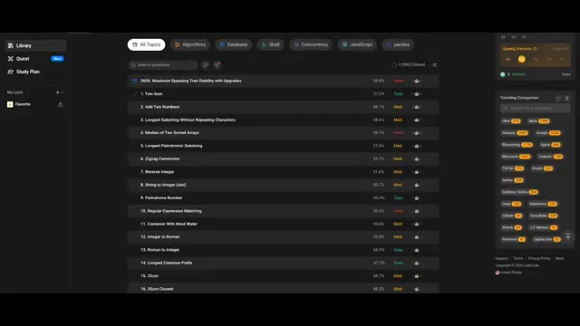
🔍 AgrandirTroisièmement. Ce qui est exactement la façon dont le problème devrait fonctionner. Nous testons la réponse de Claude et Et elle est correcte. ChatGPT, également correct. Ensuite, Gemini essaie quelque chose de différent. Il utilise des fonctions de fenêtrage. Et sa réponse est également correcte. Les trois modèles d'IA ont résolu avec succès un problème difficile de LeetCode.
Interface & Outils : Interface web de l'assistant IA Claude avec un champ de saisie de texte "Reply..." en bas et la mention du modèle "Sonnet 4.6".
Contenu textuel & Code : Texte explicatif sur l'utilisation du mot-clé DISTINCT en SQL avec un tableau de données pour le département informatique ("Walk-through for IT Department") listant les employés Max, Joe, Randy, Will, Janet avec leurs salaires, salaires supérieurs, nombre et statut d'inclusion ("Included?"), ainsi que des puces explicatives sur la gestion des égalités ("Handles ties") et des petits départements ("Handles small departments").
Action / Démonstration : Affichage d'une réponse de l'intelligence artificielle Claude détaillant l'analyse d'un problème de logique de programmation ou de base de données.
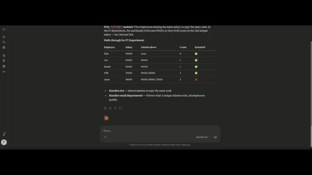
🔍 AgrandirDonc, félicitations à l'humanité. Parce que nous venons peut-être de construire quelque chose qui finira par nous rendre obsolètes. Mais d'ici ce jour-là, les développeurs sont toujours en sécurité. Parce que l'IA résout peut-être des problèmes de code, mais elle n'a toujours pas réparé le vieux code de production écrit en 2011 par un stagiaire.
Interface & Outils : Illustration graphique de type dessin animé vectoriel avec sous-titres animés.
Contenu textuel & Code : Texte affiché en bas de l'écran : "SO CONGRATULATIONS TO HUMANITY" (avec le mot "TO" mis en valeur sur fond bleu).
Action / Démonstration : Affichage d'une illustration métaphorique sur l'évolution de l'humanité liée au passage de témoin technologique.
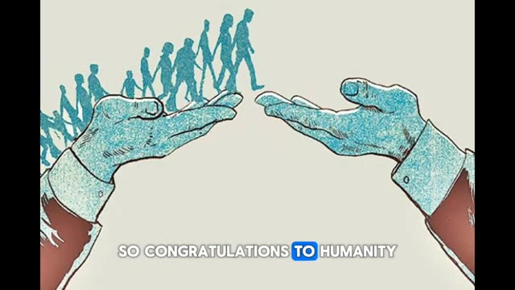
🔍 AgrandirEt si vous voulez voir plus de tests montrant ce que l'IA peut réellement faire, alors aimez cette vidéo et abonnez-vous, car nous allons continuer à tester les limites de l'IA, et probablement notre propre sécurité de l'emploi.
Interface & Outils : Écran de montage ou de sous-titrage vidéo affichant du texte stylisé.
Contenu textuel & Code : Texte à l'écran : "SHOWING WHAT AI CAN" avec le mot "SHOWING" surligné en bleu.
Action / Démonstration : Affichage de sous-titres animés textuels en superposition sur fond noir au cours de la narration.
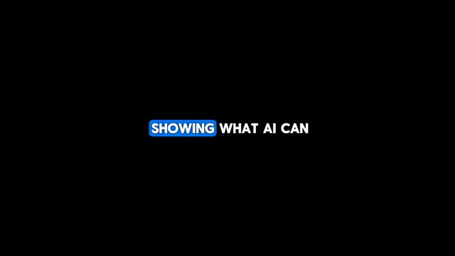
🔍 Agrandir